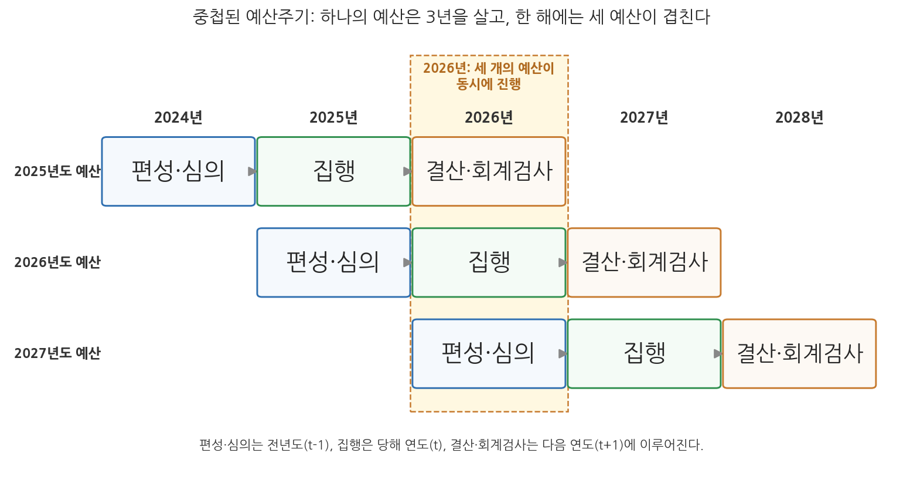
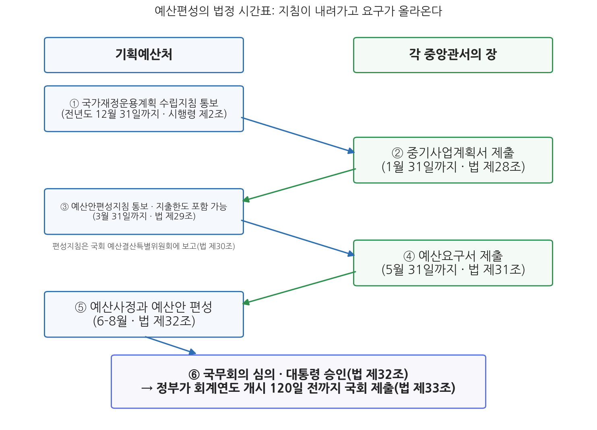

10주차 1차시. 재정과정론 (1): 예산주기와 예산편성
최종 수정: 2026-08-13 · 이 교재는 학기 중에도 계속 업데이트됩니다
가장 본질적인 의미에서, 예산은 정치과정의 심장부에 놓여 있다. (에런 윌다브스키, 『예산과정의 정치학』, 1964)
이 장에서 배우는 것
2026년 여름의 정부세종청사를 들여다보자. 4월 6일 재정경제부는 2025회계연도 국가결산보고서를 국무회의에 올려 심의·의결을 받았다. 닷새 뒤인 4월 11일에는 기획예산처가 편성한 26조 2,000억 원 규모의 2026년 첫 추가경정예산(추경)이 국회에서 확정되어 고유가 지원금 지급이 시작되었다. 그리고 그보다 앞선 3월 30일, 기획예산처는 2027년도 예산안 편성지침을 국무회의에서 확정해 각 부처에 통보했고, 각 부처는 5월 31일까지 예산요구서를 제출했으며, 2026년 8월 현재 세종청사에서는 그 요구서를 놓고 예산사정 작업이 한창이다. 요컨대 2026년 한 해 동안 정부는 세 개의 예산을 동시에 다루고 있다. 어제의 예산(2025년도)은 결산되고, 오늘의 예산(2026년도)은 집행되며, 내일의 예산(2027년도)은 편성되고 있다. 이 겹침이 이번 장의 첫 열쇠말인 중첩된 예산주기다.
이번 주부터 교재는 4부 재정과정과 예산결정으로 넘어간다. 7주차와 9주차에서 우리는 재정정책의 논리, 재정준칙, 통화정책과의 관계를 보았다. 확장이냐 긴축이냐, 준칙이냐 재량이냐 하는 그 모든 정책과 규율이 실제로 결정되고 관철되는 무대가 바로 예산과정이다. 관리재정수지 적자를 어느 수준에서 관리할 것인가라는 9주차의 질문은, 현실에서는 국가재정운용계획의 수치와 각 부처 지출한도, 그리고 예산사정의 칼질로 번역된다. 이 장은 그 무대의 전체 구조(예산주기)를 조감한 뒤, 첫 단계인 예산편성을 기획예산처의 1년이라는 시간표를 따라 들여다본다. 구체적으로 다음을 배운다.
- 예산과정 4단계(편성-심의-집행-결산)와 3년 예산주기, 그리고 한 해에 세 예산이 공존하는 중첩 구조
- 예산주기에 새겨진 권력분립: 행정부의 편성·집행, 국회의 심의·결산심사, 감사원의 회계검사
- 거시적(하향식) 예산결정과 미시적(상향식) 예산결정의 구분
- 국가재정운용계획의 의의와 수립 절차(국가재정법 제7조), 2025-2029년 계획 사례
- 총액배분 자율편성제도의 논리와 한계
- 예산편성의 법정 시간표: 편성지침 통보(제29조)에서 회계연도 개시 120일 전 국회 제출(제33조)까지
이 장은 하나의 질문을 따라 전개된다. "나라의 1년 살림은 누가, 언제, 어떤 절차로 설계하는가?"
1.1 예산주기의 4단계와 3년 중첩 구조, 그 안의 권력분립을 조감한다 → 1.2 예산결정이 위에서 아래로, 아래에서 위로 동시에 움직인다는 것을 본다 → 1.3 하향식 결정의 틀인 국가재정운용계획을 읽는다 → 1.4 그 틀을 부처 단위로 구현하는 총액배분 자율편성제도를 본다 → 1.5 기획예산처의 1년, 곧 예산편성의 법정 시간표를 월별로 따라간다.
1.1 예산주기의 의의: 겹쳐서 도는 3년의 바퀴
네 단계, 3년, 그리고 중첩
예산과정은 편성, 심의, 집행, 결산 및 회계검사의 4단계로 이루어지며, 일정한 주기를 가지고 해마다 반복된다. 하나의 예산을 기준으로 보면 이 주기는 3년에 걸쳐 있다. 편성과 심의는 회계연도가 시작되기 전 해(t-1)에, 집행은 당해 연도(t)에, 결산과 회계검사는 그다음 해(t+1)에 이루어지기 때문이다. 2027년도 예산이라면 2026년에 만들어지고, 2027년에 쓰이며, 2028년에 정산된다. 그런데 이 주기는 해마다 새로 시작되므로, 어느 한 해를 잘라 보면 서로 다른 세 예산의 서로 다른 단계가 한꺼번에 진행되고 있다. 이 장 첫머리에서 본 2026년의 세종청사가 정확히 그 장면이다. 이를 중첩된 예산주기라고 부른다. 그림 10-1이 이 구조를 보여 준다.

그림 10-1을 읽는 법은 이렇다. 가로축은 달력상의 연도이고, 세 개의 가로줄은 각각 2025년도, 2026년도, 2027년도 예산이라는 세 예산의 생애다. 각 예산은 편성·심의(파랑), 집행(초록), 결산·회계검사(주황)의 세 시기를 차례로 통과한다. 점선으로 묶은 2026년 열을 세로로 읽으면, 이 한 해 동안 2025년도 예산의 결산, 2026년도 예산의 집행, 2027년도 예산의 편성·심의가 동시에 진행됨을 알 수 있다. 이 그림에서 알 수 있는 것은 두 가지다. 첫째, 재정당국과 각 부처의 예산 담당 조직에게 예산은 1년짜리 행사가 아니라 세 개의 시간대를 오가며 연중 계속되는 업무다. 둘째, 한 단계의 산출은 다른 예산의 다른 단계로 흘러든다. 2025년도 결산에서 드러난 집행 실적과 문제점은 2027년도 예산 편성과 심의의 판단 자료가 된다. 주기가 겹쳐 돌기 때문에 환류(feedback)가 가능해지는 것이다.
재정과정(fiscal process) 또는 예산과정(budget process)은 예산의 편성, 심의, 집행, 결산 및 회계검사에 이르는 일련의 단계를 말한다. 예산주기(budget cycle)는 이 단계들이 하나의 예산을 기준으로 반복되는 시간의 틀로, 편성·심의(t-1년), 집행(t년), 결산·회계검사(t+1년)의 3년에 걸친다. 주기가 해마다 새로 시작되므로 어느 한 해에는 세 개의 예산이 서로 다른 단계에서 동시에 진행되며, 이를 중첩된 예산주기라고 한다.
주기에 새겨진 권력분립
예산주기의 단계 배분은 헌법상 권력분립의 재정판이다. 행정부는 예산을 편성하고 집행할 권한과 책임을 가지며, 국회는 예산안을 심의·확정하고 결산을 심사할 권한을 가진다. 회계검사는 어느 쪽도 아닌 독립적 검사기관(감사원)의 몫이다. 편성권을 가진 쪽이 스스로를 심사하지 못하게 하고, 돈을 쓴 쪽이 스스로 정산을 승인하지 못하게 하는 견제와 균형의 장치가 주기 안에 새겨져 있는 셈이다. 2주차 2차시에서 본 예산 원칙의 언어로 말하면, 사전의결의 원칙(쓰기 전에 국회의 의결을 받는다)과 사후 결산 심사가 주기의 앞뒤를 묶고 있다. 이러한 순환 속에서 정부의 책임성과 반응성이 제고되지만, 예산에 대한 최종적인 책임은 국민의 대표기관인 국회에 있다. 재정민주주의의 요청이다.
예산과정은 곧 정책과정이다
예산과정의 각 단계는 정책과정의 단계와 짝을 이룬다. 1주차에서 예산의 본질은 정책사업이라고 했던 것을 떠올려 보자. 린치(Lynch, 1995)는 예산주기를 정책과정의 측면에서 기획 및 분석, 정책형성, 정책집행, 감사 및 평가의 4단계로 읽었다. 기획 및 분석 단계에서는 경제 예측을 통해 재정정책의 방향을 정립하고 세입을 추계하며 각 부처가 사업계획을 세운다. 정책형성 단계는 예산편성과 심의가 이루어지는 단계로, 예산결정이 곧 정책결정이 되고 다양한 이해관계자의 영향력이 수렴된다. 정책집행 단계에서는 배정과 지출을 거쳐 예산이 실제 사업으로 전환되고, 감사 및 평가 단계에서는 회계검사와 결산심사, 그리고 재정성과관리가 이루어진다. 표 10-1이 이 대응을 정리한 것이다.
표 10-1. 정책과정과 예산과정의 대응 (Lynch, 1995를 재구성)
| 정책과정 | 예산과정 | 주요 예산업무 |
|---|---|---|
| 기획 및 분석 | 예산편성(준비) | 국가재정운용계획 수립, 정책·사업 분석과 세입 예측, 총액배분 자율편성 |
| 정책형성 | 예산편성·심의 | 편성지침 작성·통보, 예산요구서 제출, 예산안 사정·편성, 국회 예비심사·종합심사 |
| 정책집행 | 예산집행 | 예산 배정과 자금 배정, 지출원인행위와 지출, 회계처리 |
| 감사 및 평가 | 결산 및 회계검사 | 재정성과관리, 회계검사, 결산심사 |
이 대응이 말해 주는 것은, 예산과정을 공부하는 일이 회계 절차의 암기가 아니라 정책이 만들어지고 걸러지고 평가되는 통로를 공부하는 일이라는 점이다. 어떤 사업이 예산에 실리는가는 어떤 정책이 실행되는가와 같은 질문이다.
1.2 거시적 예산결정과 미시적 예산결정
편성은 왜 행정부의 몫인가
예산편성은 정부가 수행하고자 하는 계획과 사업을 구체화하는 과정이다. 사업에 들어갈 재원을 추계하고 지출 규모를 확정하는 이 작업은 오늘날 거의 모든 나라에서 행정부가 담당한다. 이를 행정부 제출 예산제도(executive budget system)라고 한다. 역사적으로는 입법부가 예산편성을 주도한 시기도 있었으나, 정부 기능이 복잡해지고 전문화되면서 정책분석에 필요한 지식과 정보를 가진 행정부가 편성을 맡는 것이 일반적이 되었다. 미국이 1921년 예산회계법으로 대통령이 통합 예산안을 의회에 제출하는 제도를 확립한 것이 대표적인 전환점이다. 한국도 헌법 제54조가 예산안 편성·제출권을 정부에, 심의·확정권을 국회에 배분하고 있다.
첫째, 정보와 전문성 때문이다. 수백 개 기관의 수천 개 사업에 대한 수요 추계와 타당성 분석은 그 사업을 실제로 운영하는 행정부가 가장 잘할 수 있다. 둘째, 통합성 때문이다. 예산은 부분의 합이 아니라 세입 전망과 거시경제 여건 안에서 총량이 관리되어야 하는데, 지역구 이해에 따라 움직이는 다수의 의원이 총량 규율을 지키기는 어렵다. 셋째, 책임의 소재 때문이다. 편성한 자가 집행하고 그 결과로 평가받는 구조가 책임행정에 부합한다. 다만 이 논리는 편성권의 독점을 정당화할 뿐 통제의 면제를 정당화하지 않는다. 그래서 심의권과 결산심사권은 국회에 남는다. 미국 연방의회처럼 의회가 증액과 신설까지 자유롭게 하는 나라에서 총량적 재정 규율이 흔들리는 문제는 10주차 2차시에서 다시 본다.
위에서 아래로, 아래에서 위로
예산편성의 의사결정은 두 방향에서 동시에 진행된다. 하나는 대통령과 중앙예산기관을 중심으로 예산운용 전반의 총량과 방향을 정하는 거시적(하향식, top-down) 예산결정이고, 다른 하나는 각 행정기관이 자신의 사업에 재원을 배분하는 미시적(상향식, bottom-up) 예산결정이다. 전통적인 예산편성은 부처의 요구를 쌓아 올려 총액이 결과로 정해지는 상향식이 지배적이었다. 거시적 결정이 제도화된 계기는 1970년대 후반 각국이 겪은 만성적 재정적자였다. 총액을 결과에 맡겨 두어서는 적자를 통제할 수 없다는 반성에서, 예산 한도를 먼저 정해 놓고 그 안에서 배분을 결정하는 방식이 도입되기 시작했다. 미국 의회가 예산결의안으로 총량을 먼저 의결하도록 한 것, 그리고 뒤이은 총괄예산법제와 적자삭감 입법들이 이 흐름에 속한다. 한국이 2004년 도입한 총액배분 자율편성제도(1.4절)도 같은 계보다.
두 방향의 결정은 초점이 다르다. 거시적 결정의 초점은 예산총액, 경제 전망, 국내총생산(GDP) 대비 재정 규모 같은 총량적 재정 규율이고, 미시적 결정의 초점은 개별 부처의 사업과 그 증감이다. 9주차에서 본 재정준칙 논의가 전형적인 거시적 결정의 언어라면, 각 부처가 어느 사업을 키우고 줄일지 다투는 것은 미시적 결정의 세계다. 건강한 예산과정은 두 방향이 만나는 지점, 곧 총량의 규율 안에서 미시적 배분의 자율과 경쟁이 작동하는 지점을 설계하는 데 달려 있다. 다음 두 절에서 보는 국가재정운용계획과 총액배분 자율편성제도가 바로 그 설계다.
1.3 국가재정운용계획: 5년의 시계
1년짜리 예산의 근시안을 넘기 위하여
국가재정운용계획은 5년 이상의 재정운용 시계(time horizon)를 갖는 연동식 중기재정계획으로, 2004년부터 수립되어 왔다. 예산은 1년 단위로 편성되지만, 대규모 사업의 재정 소요는 여러 해에 걸치고 고령화 같은 지출 압력은 수십 년의 시계에서 움직인다. 1년짜리 예산만으로는 중장기 국정과제를 체계적으로 뒷받침하기 어렵고 재정의 지속가능성도 관리하기 어렵다. 국가재정운용계획은 이 근시안을 보정하기 위한 장치로, 중장기 시계에서 재정운용의 목표와 방향을 세워 예측가능성을 높이고 재정의 건전성과 효율성을 도모하는 것을 목적으로 한다. 연동식(rolling)이라는 말은 매년 계획 기간을 한 해씩 밀며 다시 수립한다는 뜻이다. 2025년에는 2025-2029년 계획이, 2026년에는 2026-2030년 계획이 만들어지므로, 계획은 한 번 세우고 마는 문서가 아니라 해마다 갱신되는 살아 있는 틀이 된다.
법적 근거는 국가재정법 제7조다. 정부는 매년 해당 회계연도부터 5회계연도 이상의 기간에 대한 국가재정운용계획을 수립하여 회계연도 개시 120일 전까지 국회에 제출하여야 한다. 수립 주체는 기획예산처장관이다. 2026년 정부조직 개편으로 기획재정부의 예산·재정정책 기능이 기획예산처로 옮겨 가면서, 국가재정운용계획의 수립도 기획예산처장관의 소관 사무가 되었다(국가재정법 제7조, 2026년 1월 2일 시행 개정). 기획예산처는 재정운용의 방향과 목표, 분야별 재원배분계획을 세우고, 분야별 작업반과 공청회·토론회를 거쳐 계획을 작성하며, 계획은 국무회의 심의를 거쳐 정부 예산안과 함께 국회에 제출된다. 여기서 주의할 점이 있다. 국가재정운용계획은 국회에 제출되지만 국회의 심의·의결 대상은 아니다. 예산안 심사의 참고자료일 뿐 법적 구속력이 없다는 이 성격은 뒤에서 보듯 이 제도의 오래된 쟁점이다. 한편 2026년 2월 국가재정법 개정(법률 제21341호)으로 계획의 포함 사항과 첨부 서류가 보완되고 장기재정전망을 수시로 실시할 수 있는 근거가 마련되어, 중기계획과 장기전망의 연계는 제도적으로 한층 강화되었다.
정부는 2025년 8월 말 "회복과 성장을 위한 2026년 예산안 및 2025-2029년 국가재정운용계획"을 발표했다. 이 계획에서 총지출은 연평균 5.5% 증가하여 2029년 834조 7,000억 원에 이르고, 국가채무(D1)는 2029년 1,788조 9,000억 원(GDP 대비 58.0%)으로 전망되었다. 주목할 것은 재정수지 목표의 변화다. 그간의 국가재정운용계획이 관리재정수지 적자를 GDP 대비 3% 이내에서 관리한다는 목표를 제시해 온 것과 달리, 이 계획은 목표를 4%대로 완화했다. 확장재정 기조를 중기계획의 수치로 공식화한 것이다. 이를 두고 재정건전성 논란이 계속 제기되고 있다. (출처: 한국일보 2025-08-28, 뉴스핌 2026-05-29)
이 사례가 보여 주는 것은 국가재정운용계획의 두 얼굴이다. 한편으로 계획은 재정의 미래 경로를 수치로 공개해 국회와 국민이 정부의 재정 기조를 검증할 수 있게 한다. 관리재정수지 목표가 3% 이내에서 4%대로 바뀌었다는 사실을 우리가 아는 것 자체가 계획이 제출되기 때문이다. 다른 한편으로 계획은 구속력이 없기에 정부가 바뀌거나 기조가 바뀌면 목표 자체가 이동한다. 9주차에서 본 재정준칙 법제화가 무산된 상태에서, 국가재정운용계획의 수지·채무 전망은 한국 재정의 중기 규율을 보여 주는 사실상 유일한 공식 문서다. 규율의 무게를 법이 아니라 계획이 지고 있는 셈이며, 그 계획의 목표는 방금 본 것처럼 움직일 수 있다.
1.4 총액배분 자율편성제도
한도는 위에서, 배분은 아래에서
총액배분 자율편성(top-down) 예산제도는 중앙예산기관이 지출총액을 먼저 결정하고, 전략적 재원배분을 위한 분야별·부처별 지출한도를 설정한 뒤, 각 부처가 그 한도 안에서 사업별로 재원을 배분하는 제도다. 한국은 2004년 이 제도를 도입하여 2005년도 예산안 편성부터 적용했다. 국가재정운용계획, 성과관리제도, 디지털예산회계시스템 구축과 함께 참여정부 재정개혁의 한 축으로 도입된 것으로, 1.2절의 언어로 말하면 거시적 결정(총액과 한도)과 미시적 결정(한도 내 배분)의 분업을 제도화한 것이다. 국가재정운용계획이 그리는 중기 총량이 분야별·부처별 지출한도로 구체화되고, 지출한도는 예산안편성지침에 담겨 각 부처에 통보된다(국가재정법 제29조 제2항).
총액배분 자율편성제도는 중앙예산기관이 국가재정운용계획에 근거해 지출총액과 분야별·부처별 지출한도(ceiling)를 사전에 결정·통보하고, 각 부처는 그 한도 안에서 소관 사업의 우선순위에 따라 자율적으로 예산을 편성하는 하향식(top-down) 예산편성 방식이다. 정부 예산의 점증적 팽창을 억제하는 총량 규율 장치이자, 한도 내에서는 부처의 전문성과 자율성을 활용하는 분권화 장치라는 이중의 성격을 가진다.
기대와 현실
제도의 기대효과는 다섯 가지로 정리된다. 첫째, 국정 우선순위에 입각한 재원의 전략적 배분이 가능해진다. 둘째, 재정당국은 총량과 거시 재정정책에 집중하고 개별 사업 심사는 부처의 전문성에 맡김으로써 양자 간 정보 비대칭이 완화된다. 셋째, 중기적 시계에서 재정의 경기조절 기능이 강화된다. 넷째, 부처가 일부러 부풀려 요구하고 예산당국이 대폭 깎는 비합리적 관행(과다요구-대폭 삭감)을 극복하여 편성의 효율이 높아진다. 다섯째, 미래의 재정 부담에 미리 대비할 수 있다.
현실은 기대만큼 매끄럽지 않았다. 첫째, 지출한도 안이라 해도 신규사업에 대해서는 중앙예산기관의 관여가 여전히 강하다. 둘째, 부처가 요구서를 낸 뒤 사정 과정에서 사업 내용이 바뀌는 일이 잦아 자율편성의 취지가 퇴색한다. 셋째, 지출한도 자체가 잘 지켜지지 않는 편이다. 부처는 한도를 넘겨 요구하고, 한도는 사정 과정에서 다시 조정되곤 한다. 넷째, 실제 한도 결정의 단위가 세부사업 수준으로 내려가 버리면 부처의 자율 영역이 오히려 좁아진다. 요컨대 제도의 성패는 한도의 신뢰성과 자율의 실질성에 달려 있는데, 두 가지 모두 완전하게 확보되지는 않은 상태다.
국가재정법 제29조 제2항은 기획예산처장관이 예산안편성지침에 중앙관서별 지출한도를 "포함하여 통보할 수 있다"고 규정한다. 총액배분 자율편성의 핵심 장치인 지출한도가 의무 규정이 아니라 임의 규정에 근거하고 있는 것이다. 한도의 설정과 수준이 매년 재정당국의 재량과 정부의 재정 기조에 따라 달라질 수 있다는 점은, 이 제도가 재정준칙처럼 단단한 규율이 아니라 운용상의 관리 장치임을 보여 준다. 제도의 이름(총액배분)만 보고 총량 규율이 법으로 고정되어 있다고 오해하지 말아야 한다.
1.5 예산편성 절차: 기획예산처의 1년
이제 편성의 실제 시간표를 따라가 보자. 국가재정법은 예산편성의 주요 단계마다 법정 기한을 박아 두었다. 그림 10-2는 이 시간표를 기획예산처와 각 중앙관서 사이의 주고받음으로 그린 것이다.

그림 10-2를 읽는 법은 이렇다. 왼쪽 열이 중앙예산기관인 기획예산처, 오른쪽 열이 각 중앙관서(부처)이고, 화살표는 문서가 오가는 방향이다. 위에서 아래로 내려갈수록 시간이 흐르며, 각 상자에 법정 기한과 근거 조문이 적혀 있다. 이 그림에서 알 수 있는 것은 두 가지다. 첫째, 편성은 기획예산처의 독백이 아니라 지침 통보(내려보냄)와 계획·요구서 제출(올려보냄)이 교차하는 왕복 과정이다. 둘째, 12월 말의 수립지침에서 9월 초의 국회 제출까지, 하나의 예산안을 만드는 데 아홉 달 이상이 걸린다. 예산주기 전체(3년)의 중첩 속에서 편성만 떼어 놓아도 1년 가까운 작업인 것이다.
겨울에서 봄까지: 지침의 시간
편성의 출발은 회계연도가 시작되기도 전인 전전년도 겨울이다. 기획예산처장관은 국가재정운용계획 수립을 위한 지침을 마련하여 전년도 12월 31일까지 각 중앙관서의 장에게 통보한다(국가재정법 시행령 제2조). 이에 따라 각 중앙관서의 장은 매년 1월 31일까지, 해당 회계연도부터 5회계연도 이상의 기간에 대한 신규사업과 주요 계속사업의 중기사업계획서를 기획예산처장관에게 제출하여야 한다(국가재정법 제28조). 중기사업계획서는 부처의 사업 구상을 중기 재정 틀에 태우는 첫 문서로, 국가재정운용계획과 지출한도 설정의 기초 자료가 된다.
3월 말이면 편성의 기준이 내려간다. 예산안편성지침이다.
"① 기획예산처장관은 국무회의의 심의를 거쳐 대통령의 승인을 얻은 다음 연도의 예산안편성지침을 매년 3월 31일까지 각 중앙관서의 장에게 통보하여야 한다.
② 기획예산처장관은 국가재정운용계획과 예산편성을 연계하기 위하여 제1항의 규정에 따른 예산안편성지침에 중앙관서별 지출한도를 포함하여 통보할 수 있다."
무슨 뜻인가. 첫째, 편성지침은 기획예산처의 내부 문서가 아니라 국무회의 심의와 대통령 승인을 거치는 국정 문서다. 다음 연도 재정운용의 여건과 방향, 편성의 기준이 여기에 담기므로, 지침은 사실상 이듬해 나라 살림의 설계 방침이다. 둘째, 제2항이 1.4절에서 본 총액배분 자율편성의 법적 통로다. 지출한도가 지침에 실려 내려가면서 국가재정운용계획의 중기 총량이 각 부처의 편성 한도로 번역된다. 아울러 기획예산처장관은 각 중앙관서에 통보한 편성지침을 국회 예산결산특별위원회에 보고하여야 한다(국가재정법 제30조). 편성 단계부터 국회가 정부의 편성 방침을 들여다볼 수 있게 한 장치다. 기금 쪽에서도 같은 시기에 기금운용계획안 작성지침이 기금관리주체에게 통보된다(국가재정법 제66조). 3주차에서 본 것처럼 기금은 예산과 별도의 재정 수단이지만, 편성의 시간표는 예산과 나란히 움직인다.
기획예산처는 2026년 3월 30일 국무회의에서 "2027년도 예산안 편성 및 기금운용계획안 작성지침"을 의결·확정하고, 법정 기한인 3월 31일까지 각 중앙관서의 장에게 통보했다. 2026년 1월 2일 출범한 기획예산처가 처음으로 시달한 편성지침이다. 이 지침은 지출구조조정의 기준을 최초로 공개하면서 재량지출 15%, 의무지출 10%의 감축 목표를 제시했다. (출처: 대한민국 정책브리핑, 2026-03-30)
이 사례가 보여 주는 것은 편성지침의 실질적 무게다. 확장재정 기조 속에서도 재원을 마련하려면 기존 지출의 구조조정이 필요한데, 그 강도(재량지출 15% 감축)를 정하는 문서가 바로 편성지침이다. 각 부처의 예산 담당자들이 3월 말 지침 발표를 주시하는 이유이며, 부처 분리 이후 예산편성이라는 국가 기능이 기획예산처의 이름으로 작동하기 시작했음을 보여 주는 장면이기도 하다.
초여름: 요구의 시간
지침과 지출한도를 받은 각 중앙관서는 편성지침에 따라 소관 사업의 다음 연도 세입세출예산, 계속비, 명시이월비, 국고채무부담행위 요구서(예산요구서)를 작성하여 5월 31일까지 기획예산처장관에게 제출하여야 한다(국가재정법 제31조). 부처 내부에서도 작은 예산과정이 돌아간다. 각 부서(과)가 소관 사업계획과 소요 예산을 만들어 예산총괄부서(기획조정실)에 보내면, 총괄부서가 부서별 요구를 조정해 요구서안을 만들고, 장관 또는 차관이 주재하는 회의에서 부처의 최종 요구서를 확정해 기획예산처에 제출한다. 부처 안에서도 요구하는 쪽과 조정하는 쪽의 실랑이가 벌어지는 것이니, 예산을 둘러싼 흥정은 정부 전체 수준의 축소판이 부처마다 있는 셈이다.
여름: 사정의 시간
예산요구서가 모이면 기획예산처의 예산사정 작업이 시작되어 6월에서 8월까지 이어진다. 예산사정(budget review)이란 여러 분석과 정보를 동원해 예산요구서를 검토하는 일로, 사업의 타당성과 우선순위가 이 단계에서 심사된다. 요구액은 과다한 경우가 많으므로 사정 작업은 주로 삭감에 주력하게 된다. 사정은 기술적 심사인 동시에 정치적 과정이다. 대통령의 정책 의지가 반영되고 다양한 이해관계자의 요구가 스며든다. 또한 사업의 실상은 부처가 가장 잘 알고 재원의 사정은 기획예산처가 가장 잘 아는 정보 비대칭 구조이므로, 사정 기간 내내 기획예산처 예산실과 부처 공무원들 사이에 설명하고 따지는 소통이 계속된다. 왜 부처는 부풀려 요구하고 예산당국은 깎는 것을 기본값으로 삼는가, 이 행태의 논리는 11주차 예산행태론에서 본격적으로 다룬다.
초가을: 확정과 제출
사정을 거쳐 기획예산처장관이 예산안을 편성하면, 예산안은 국무회의의 심의를 거쳐 대통령의 승인을 얻어 정부 예산안으로 확정된다(국가재정법 제32조). 이 과정에는 권력분립을 배려한 특칙이 있다. 국회, 대법원, 헌법재판소, 중앙선거관리위원회 같은 독립기관의 세출예산요구액을 감액하려면 국무회의에서 해당 기관장의 의견을 들어야 하고, 감액한 때에는 그 규모와 이유, 기관장의 의견을 국회에 제출해야 한다(국가재정법 제40조). 감사원 예산의 감액에도 같은 취지의 절차가 적용된다(제41조). 행정부가 편성권을 빌미로 다른 헌법기관을 재정으로 압박하지 못하게 한 장치다.
확정된 예산안은 국회로 간다.
"정부는 제32조의 규정에 따라 대통령의 승인을 얻은 예산안을 회계연도 개시 120일 전까지 국회에 제출하여야 한다."
무슨 뜻인가. 다음 회계연도는 1월 1일에 시작하므로, 정부 예산안은 늦어도 9월 초에는 국회에 도착해야 한다는 뜻이다. 원래 헌법 제54조 제2항은 회계연도 개시 90일 전까지 제출하도록 정하고 있는데, 2013년 5월 국가재정법 개정으로 법률상 기한이 120일 전으로 앞당겨졌다. 부칙에 따라 단계적으로 적용되어 2015년도 예산안은 100일 전, 2016년도 예산안은 110일 전을 거쳐 2017년도 예산안부터 120일 전 제출이 완전히 자리 잡았다. 목적은 하나, 국회의 심의 기간을 늘리기 위해서다. 제출 기한을 한 달 앞당기면 심의에 쓸 수 있는 시간이 약 60일에서 약 90일로 늘어난다. 국제적으로 보면 예산안의 의회 제출 기한은 다양하다. 미국은 법률로 회계연도 개시 약 8개월 전 제출을 규정하고 있고, 독일, 덴마크, 노르웨이, 한국 등은 약 4개월 전, 프랑스, 스페인, 일본 등은 약 3개월 전이다.
헌법 제54조 제2항의 "회계연도 개시 90일 전까지"는 정부가 지켜야 할 최소한의 기한이다. 국가재정법 제33조가 이를 120일 전으로 앞당긴 것은 헌법이 정한 하한보다 더 일찍 제출하도록 의무를 강화한 것이므로 헌법에 어긋나지 않는다. 거꾸로 법률로 기한을 90일보다 늦출 수는 없다. 조문을 읽을 때는 어느 쪽 방향의 이탈이 금지되는지를 따져 읽어야 한다.
여기까지가 편성, 곧 행정부 과정의 끝이다. 9월 초 예산안이 국회에 제출되는 순간 무대는 세종에서 여의도로 옮겨 간다. 국회가 예산안을 어떻게 뜯어보고 고치는지, 그리고 확정된 예산이 어떻게 집행되고 정산되는지는 다음 차시에서 다룬다.
요약
예산과정은 편성, 심의, 집행, 결산 및 회계검사의 4단계로 이루어지며, 하나의 예산을 기준으로 편성·심의(t-1년), 집행(t년), 결산·회계검사(t+1년)의 3년 주기를 돈다. 주기가 해마다 새로 시작되므로 한 해에는 세 개의 예산이 서로 다른 단계에서 동시에 진행되는 중첩 구조가 나타나며, 2026년의 경우 2025년도 결산(재정경제부), 2026년도 집행과 추경(기획예산처 편성), 2027년도 편성이 공존했다. 주기 안에는 행정부의 편성·집행, 국회의 심의·결산심사, 감사원의 회계검사라는 권력분립이 새겨져 있고, 각 단계는 정책과정의 기획·형성·집행·평가와 짝을 이룬다. 예산결정은 총량을 다루는 거시적(하향식) 결정과 개별 사업을 다루는 미시적(상향식) 결정의 결합이며, 한국은 이를 국가재정운용계획과 총액배분 자율편성제도로 제도화했다. 국가재정운용계획은 기획예산처장관이 수립하는 5년 이상의 연동식 중기재정계획으로 예산안과 함께 국회에 제출되지만 심의 대상은 아니며, 2025-2029년 계획은 관리재정수지 적자 관리 목표를 4%대로 완화해 확장재정 기조를 공식화했다. 총액배분 자율편성제도는 지출한도를 먼저 정하고 한도 내 배분을 부처 자율에 맡기는 방식이나, 지출한도의 근거가 임의 규정이고 한도 준수와 자율의 실질성이 완전하지 않다는 한계가 있다. 편성의 법정 시간표는 국가재정운용계획 수립지침 통보(전년도 12월 31일), 중기사업계획서 제출(1월 31일, 제28조), 예산안편성지침 통보(3월 31일, 제29조), 예산요구서 제출(5월 31일, 제31조), 여름의 예산사정, 국무회의 심의·대통령 승인(제32조)을 거쳐 회계연도 개시 120일 전 국회 제출(제33조)로 마무리되며, 2027년도 예산안 편성지침은 기획예산처가 출범 후 처음 시달한 지침으로 재량지출 15% 감축 등 지출구조조정 기준을 최초로 공개했다.
토론·복습 문제
10-1. (서술형 연습) 중첩된 예산주기의 개념을 정의하고, 2026년 한 해를 예로 들어 어떤 예산들이 어떤 단계에서 동시에 진행되는지 서술하시오. 이어서 예산주기의 단계 배분(행정부의 편성·집행, 국회의 심의·결산심사, 감사원의 회계검사)이 재정민주주의와 어떻게 연결되는지 설명하시오.
10-2. (계산·해석형) 헌법 제54조 제2항(회계연도 개시 90일 전 제출, 30일 전 의결)과 국가재정법 제33조(120일 전 제출)를 적용하여, 헌법 기준과 법률 기준 각각에서 국회가 예산안 심의에 쓸 수 있는 기간이 며칠인지 계산하시오. 2013년 국가재정법 개정으로 심의 기간이 며칠 늘어났는지 밝히고, 제출 기한을 법률로 앞당긴 것이 헌법 위반이 아닌 이유를 설명하시오.
10-3. (찬반 토론) "총액배분 자율편성제도는 부처의 자율성을 확대했다기보다 중앙예산기관의 통제를 정교화한 제도다"라는 주장에 대해 찬성과 반대의 논거를 각각 제시하고 자신의 입장을 정하시오. 제도의 기대효과(정보 비대칭 완화, 전략적 배분)와 한계(신규사업 관여, 한도 준수 미흡, 한도 결정 단위의 세분화)를 논거로 활용하시오.
10-4. 국가재정운용계획은 국회에 제출되지만 심의·의결 대상이 아니어서 법적 구속력이 없다. 이 설계의 장점(재정운용의 신축성)과 단점(중기 규율의 약화)을 각각 설명하고, 9주차에서 본 재정준칙 법제화 논의와 연계하여 중기재정계획에 구속력을 부여하는 방안의 타당성을 논하시오.